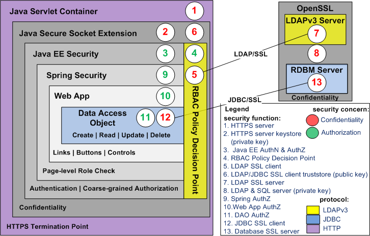

Overview of Fortress Demo # 2 End-to-End Web Security
The purpose of this application is to demonstrate correct security techniques inside a Java Web environment.
Topics covered include Authentication, Authorization, Confidentiality and Audit. Both declarative and programmatic controls will be covered.
The application installation requires completion of the sections listed below.
Sections required for installation:
- Heartbleed Bug
- Managing PKI Keys
- Set Hostname Entry
- Install Fortress
- Install MySQL
- Install Tomcat
- Install Commander RBAC Web Admin
- Install Fortress Demo #2
Demonstrate End-to-End Security Enforcement
The following system diagram illustrates a layered approach to security:

Security Mechanisms in the Tutorial
This sample Web application demonstrates usage of the following security mechanisms:
- Java 2 Authentication
- Java 2 Coarse-grained Role Authorization
- Spring Coarse-grained Page Role Authorization
- Medium-grained RBAC Authorization inside Wicket Web Framework
- Fine-grained RBAC Authorization within Data Persistence Classes
- Java 2 Confidentiality
- LDAP v3 Confidentiality
- JDBC Confidentiality
- Audit Trail of Authentication & Authorization Events
Prerequisites
- Debian or Redhat Liunx machine with OpenSSL installed
- Java 7 (or greater) SDK
- Apache Ant 1.8 (or greater)
- Apache Maven
Infrastructure Installed during Tutorial
- Fortress RBAC SDK
- OpenLDAP Directory Server
- MySQL Database Manager
- Tomcat Servlet Container
- Commander RBAC Web Admin
The techniques demonstrated in this demo are applicable to other Java Web application infrastructure configurations.
If you find security flaws, or have questions about Fortress, submit to OpenLDAP Fortress Discussion list.